山梨県内各地には神社の祠などに顔が付いている。
それ鬼瓦でしょ、と一蹴されそうだが、色々調べてみるとどうも様子がおかしいのだ。
真相を確かめるべく山梨に向かった。
そこには鬼瓦とは一味もふた味も違う
奇妙な「顔」が私を待ち受けていたのだ。
最初に訪れたのは山梨県の中央部、甲府市の南に位置する
中央市井之口の
若宮八幡宮。
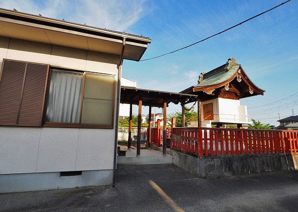
拝殿が自治会館と兼用という珍しい造り。
会館の後に本殿が建っている。
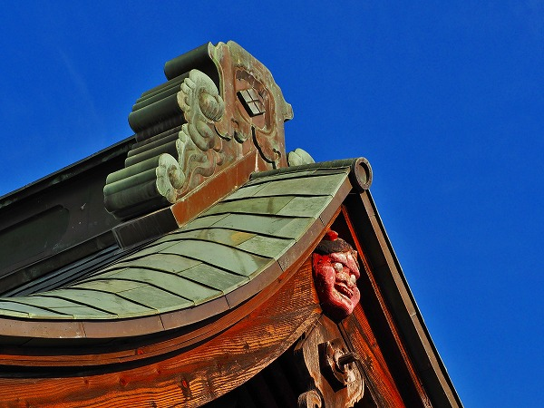
その本殿の懸魚（破風飾り）に
鬼の顔があしらわれているのだ。
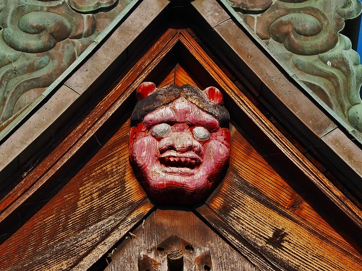
がっつし赤鬼。
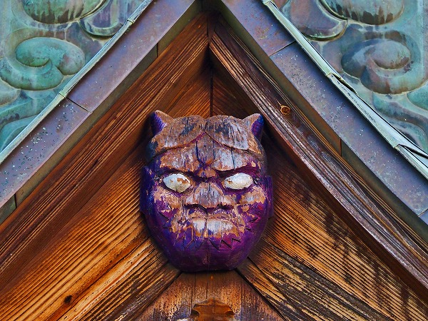
逆サイドには茶色？紫？靑？の鬼がいた。
普通だったら妻のもうひとつ上の
棟の両端に鬼瓦として設置されるはずの鬼の面が何故かここでは妻の下に掲げられている。
これから先、
甲州という土地、鬼面、そして道祖神信仰という三者が織りなす複雑怪奇な物語が広がっていく。
例によってダラダラと長く続くのでご覚悟召されよ。
で、お次は中央市山之神の
八幡神社。
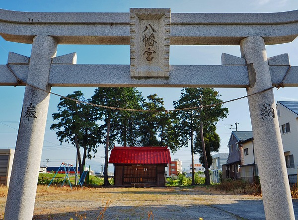
ここも道祖神とは関係ないのだが
鬼瓦が凄いのだ。
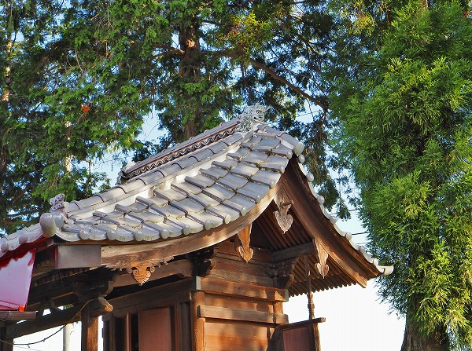
本殿の屋根を見ると… いらっしゃいました。
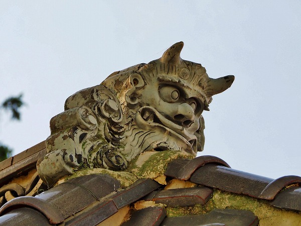
くぅ～っ！てな表情。
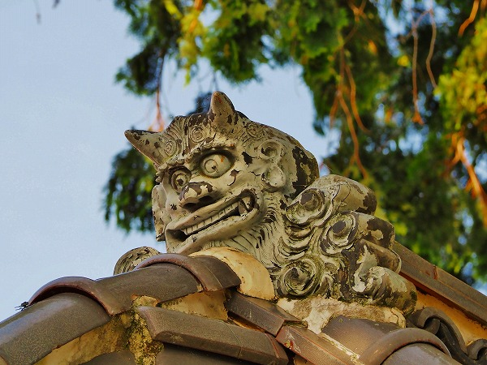
こちらはぐぁ～っ！という表情。
形態としては通常の鬼瓦なのだが、ビジュアル的に凄いので敢えて紹介させてもらいました。
お次も中央市西花輪の
八幡大神社。
ルート的に言うと甲府市内からスタートし、どんどん南下している。
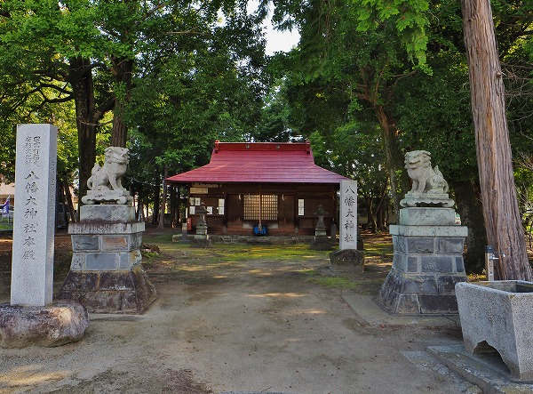
鬱蒼とした境内で蚊が凄かった。
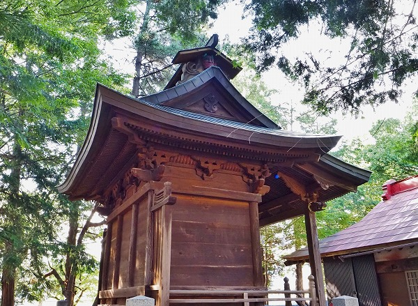
本殿が少し変わった形状で
棟の上に更に屋根がかかっている。
その屋根の下に…
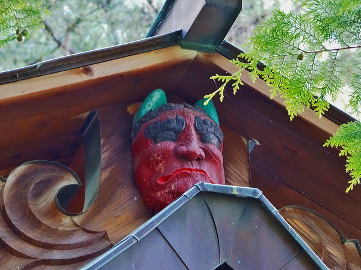
おお、おりました！
赤い顔に緑の角。口をへの字に曲げた鬼面がおりますぞ。
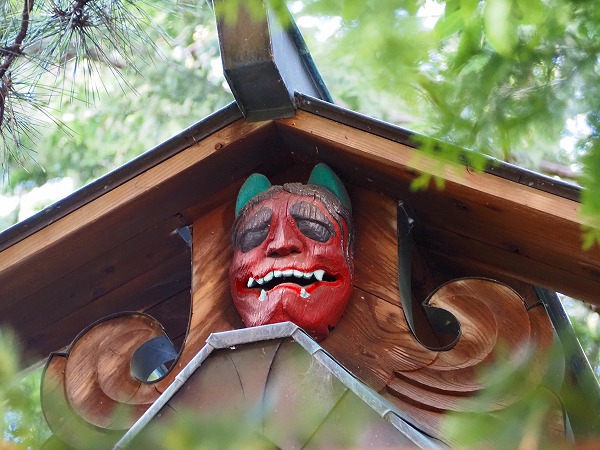
逆サイドはクワトロ牙の口を広げた鬼面。
目が真っ黒なのが怖い。
このように中央市中央部には陶製の鬼瓦ではなく
木製の鬼面が鬼瓦の代わりに据えられているケースが散見された。
しかしさらに南下すると更に不思議な鬼面が現れるのだ。
笛吹川を越えて中央市大鳥居というエリアに入る。
ここはかつて
豊富村といい、養蚕が盛んなエリアだったという。
位置的には
甲府盆地の南端であり、その先は山が連なりその先には富士山がそびえている。
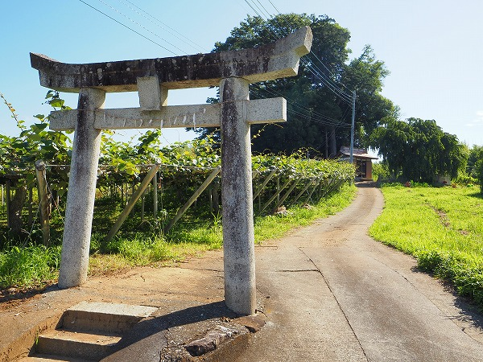
最初に訪れたのが
御﨑神社。
周囲は広大な畑が広がる。鳥居の隣はぶどう畑。
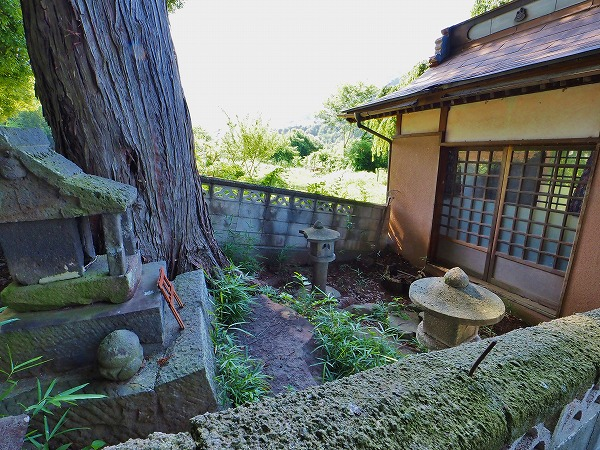
ここは稲荷神社である。
拝殿の後には小さな石祠があり、それが本殿となっているようだ。
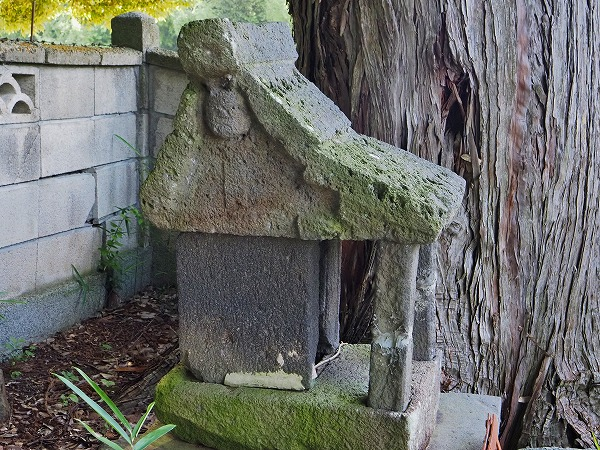
その石祠の屋根に注目していただきたい。
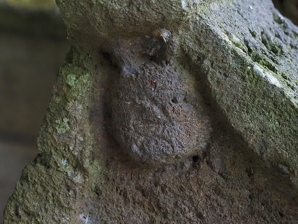
最初の若宮八幡宮同様、鬼瓦の位置ではなく
破風飾りの部分に顔が彫られている。
角が生えているから鬼面なのだろう。
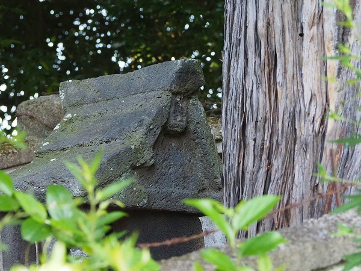
逆サイドにも顔が彫られていた。
やはり鬼のようだ。
繰り返すがこれが単に鬼瓦であればどうしてもうひとつ上の棟の両脇に彫らないのだろうか？
そもそもこれは鬼瓦なのだろうか？
これまで見てきた木製の鬼面も含めて単純に
鬼瓦の変形版ではないような気がしてきた。
それは何か、というと今のところ鬼、としか言いようがないのだが。
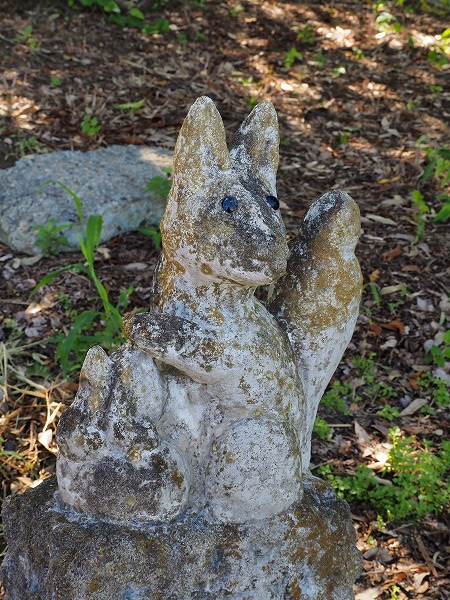
境内にあったコンクリのキツネ様。
同じく中央市大鳥居の
辻にある道祖神。
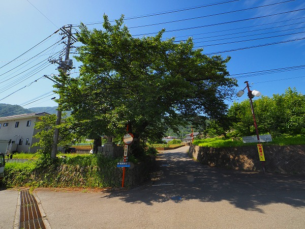
大きな木の下に石祠がある。
コレが道祖神なのだ。
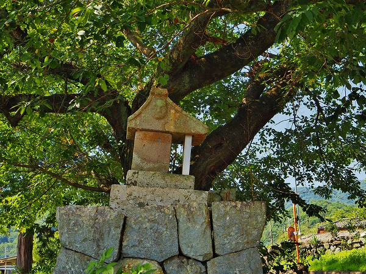
道祖神とはムラの入口や辻にあり、ムラに悪いモノが入ってこないように設置するムラの守り神だ。
形状としては石碑などが一般的だが、中には巨大な男根や人形を設置する場合もある。
（東北地方などでは巨大な人形道祖神を設置したりする）
また長野県では男女が並んだ双体道祖神の石碑が有名で、山梨県内にも数多く見られる。
さらに山梨県内には丸石の道祖神も数多く見られる。
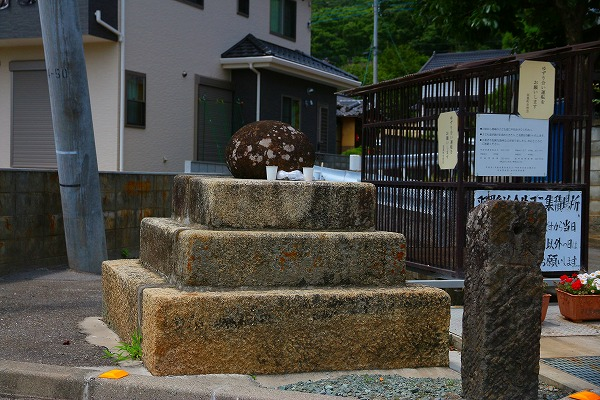
（ロケ地:甲府市）
更に祠型の道祖神も山梨県内では数多く見らる。
つまり
山梨県内の道祖神は祠型、双体型、丸石型、石碑型が複雑に混在しているのだ。
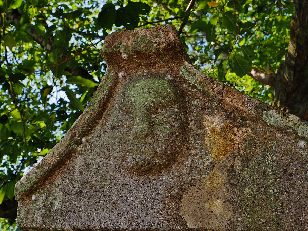
そんな石祠の側面にも顔が刻まれている。
彫りが浅く、表情までは読み取れない。

逆側にも顔が彫られていた。
「山梨県の道祖神」（中沢厚 有峰書店）によるとこの祠に彫られている顔は
猿田彦の面だという。
確かに角がない。
ここにきて単なる鬼瓦ではない、という私の直感は確信に変わって来た。
中央市関原の
若宮八幡神社。
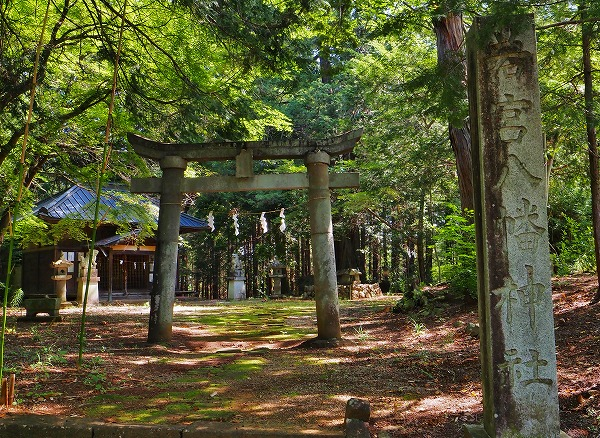
人里と山のほぼ境界線にある神社だ。
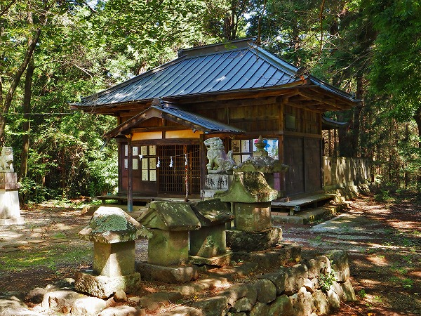
拝殿の前に石祠が4つ並んでいる。
その内の一番奥が道祖神の祠だ。
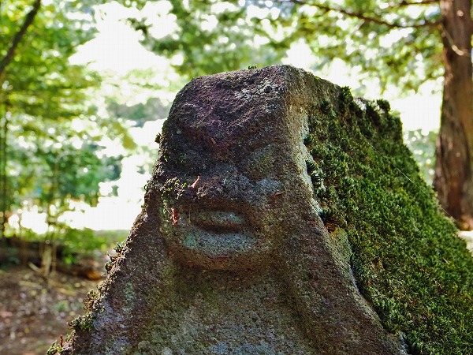
両側には顔が彫られている。
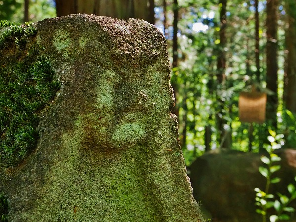
チョットこのレベルになってくると
鬼だか猿田彦だか良く判らなくなってくる。
若宮八幡神社からさらに南にある
山神社。
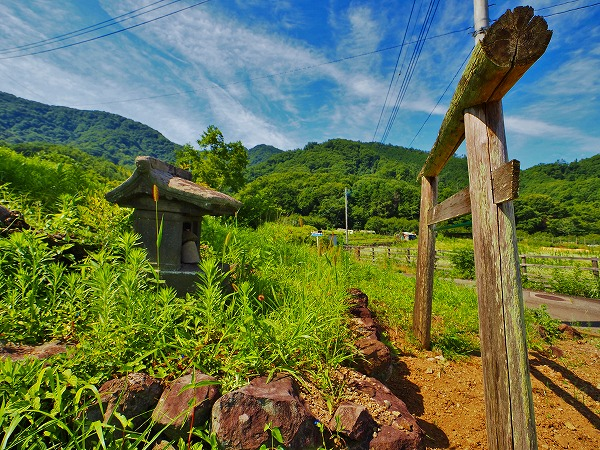
近くには登山道の入口があり、
いよいよ甲府盆地もここで終わり、といった場所だ。
素朴な鳥居と石祠がポツンと建っていた。
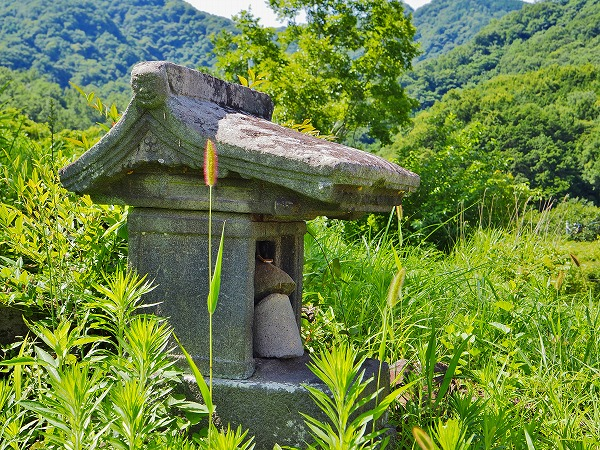
祠からは
男根型の石がはみ出していた。
本栖湖方面から山を越えて来る場合、ここからムラに入る場所だけにやはり道祖神的な性格が強いのだろう。
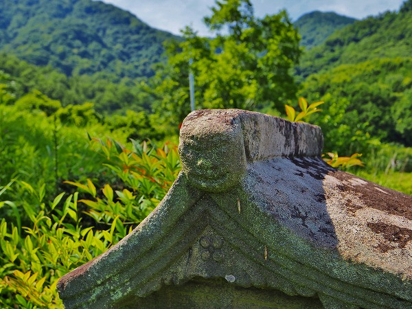
人面は棟の両脇にあった。
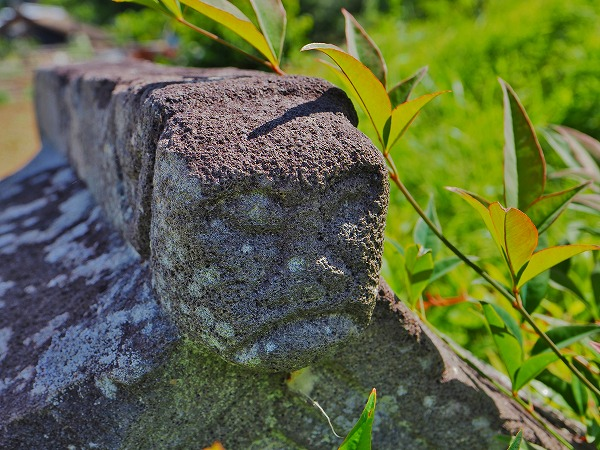
角は確認できないのでやはり猿田彦なのだろうか。
ちなみにこの辺りは車で入れないので、ずーっと歩きで回った。
気温38度の中、坦々と石祠の顔を確認する作業は我ながらクレイジーだなあ、と思った。
段々意識が遠のいて来たぞ…
道祖神関係の資料を捜しに近くの郷土資料館にお邪魔した。
その際、近くの観音堂に
とんでもない観音様がいることが判明。
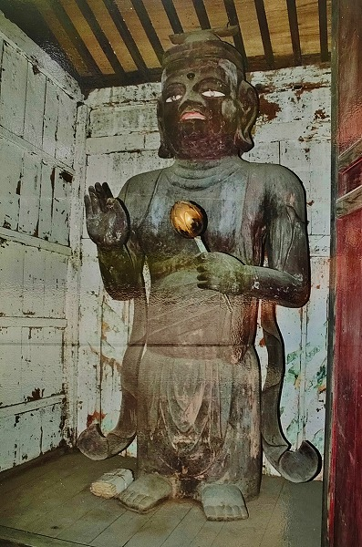
どーですか、このお姿。
しかもこの観音像、
平安時代のものなんですって！
しかも腰と足の部分が欠けていて腹の下がすぐ膝、みたいな身体になってるけど、欠けた部分があったとしてら
推定5.5ｍという巨大な像なんですって！
凄くないですか？
ちなみに現在は秘仏となっており、その姿は見ることは出来ない（画像は説明の看板のもの）。
他にも数か所道祖神を巡ったが、顔を彫ってあるものは見つけられなかった。
もちろん双体型や丸石型なども多かった。
というわけで灼熱の道祖神めぐりは一旦終了。暑かったー！
さて。
再びの道祖神フェイスウオッチングの旅である。
今回は
山梨県北部の北杜市にお邪魔した。
前述の「山梨県の道祖神」によるとこの辺りに
石祠型道祖神の名作が揃っているというのだ。
北杜市須玉町上津金桑原の
路傍の道祖神。
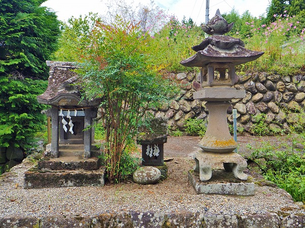
一番左が祠型の道祖神だ。
確かに甲府盆地南部で見た道祖神とは同じ祠型でも
出来がまるで違う。
例えば屋根は唐破風が切ってあるし、石祠なのにまるで木像建築のように
軒下の垂木や斗組みもちゃんと彫られている。
何よりプロポーションがよろしい。
この辺りは
高遠石工と呼ばれた石工集団がしばしば出稼ぎに訪れていた土地で、この祠もそういった高遠石工が手掛けたものと思われる。
高遠はこの北杜市の西、山一つ越えた伊那谷にあるため高遠石工が頻繁に訪れていたと考えられる。
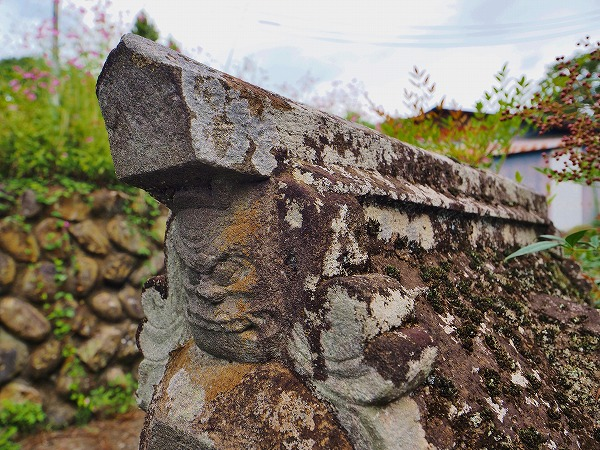
そしてそんな祠にもキッチリ顔が彫られていた。
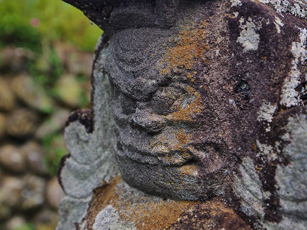
彫られている場所は
棟の先端でもなく、破風の下でもない、その中間。
このケースは初めて見た。
牙を剥いて恐ろしい顔をしている。角はない。

吽形。
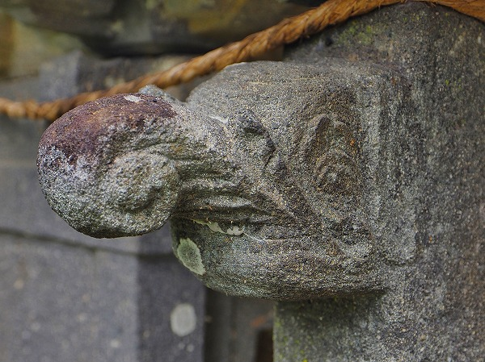
象鼻までちゃんと付いていた。
祠の内部には石棒が納まっていた。
次に訪れたのは上津金の
海岸寺。
奈良の大仏の建立でお馴染み、行基上人が開いた寺とされている。
この寺は
高遠石工の中でも稀代の名工と謳われた守屋貞治が手掛けた石仏群で有名だ。

キリっとした細い目が特徴的な貞治の作品が美しい自然の中堪能できる素晴らしい古刹だ。
そんな寺の一画にある
道祖神。
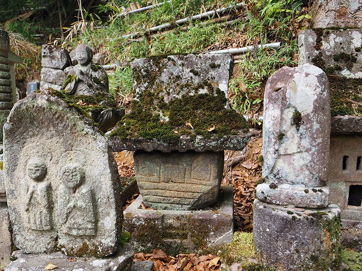
左には双体型の道祖神がいて、その隣に祠型の道祖神がある。
流石にどちらも高遠石工の作ではないだろうなあ。
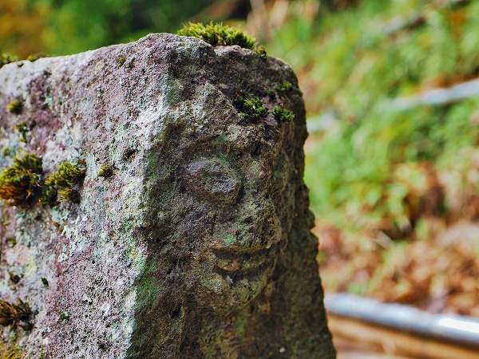
それでもキッチリ顔は彫られていた。笑ってるのか？
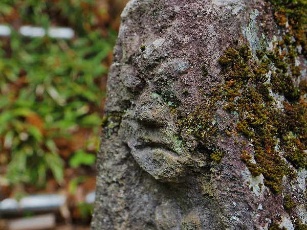
こちらはへの字口。無念！って感じ。
次に訪れたのは北杜市須玉町下津金の
辻にあった道祖神。
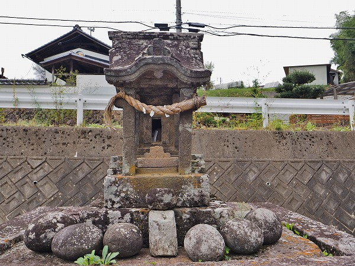
道路拡張で平成8年に移転したそうだ。
これもまた見事な祠だ。

先程の上津金の道祖神と同じく破風と棟の間に顔がある。
で、思い出したのが、
中央市の八幡大神社。
これも屋根の合わさった破風と棟の間に面があった。
もしかしたら、私が棟だと思っていたのは
棟の上に取り付けた棟をカバーする部材で本来の棟は顔が付いている部分なのかも知れない。
だとしたらやっぱり単なる鬼瓦なのか？
でも破風の下に顔があるケースもあるしなあ。う～む。
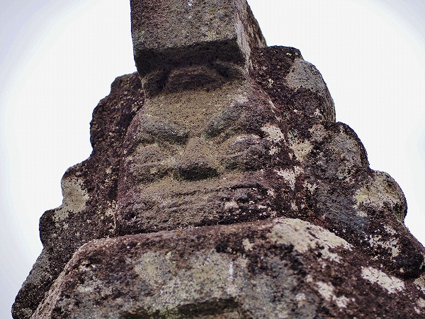
上津金のものと同じ石工の作なのかと思ったが、表情に若干の違いが伺える。
若干摩滅しているが、上津金の方が迫力があって良い表情だった。
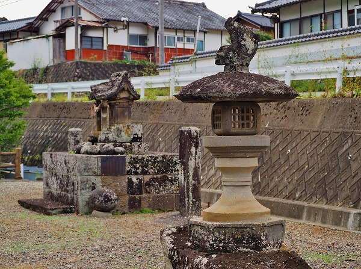
隣には燈籠が建っていた。
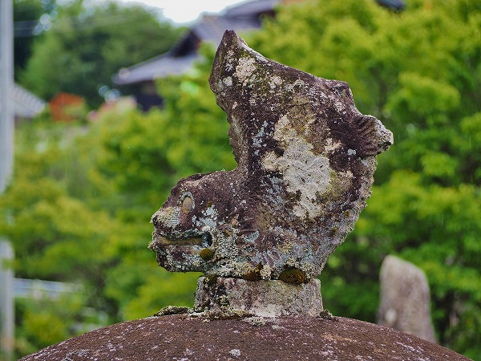
笠の上には鯱なのだろうか？
どうみても
タイ焼きにしか見えないんですけど。
お次は津金より東、
比志に移動する。
この日はバスで出かけたのだが、乗客は私以外この先の増冨温泉に行く客だった。
何でも癌が治る温泉なんだとか。
で、比志の道祖神である。
比志は塩川の両岸に広がる長閑な集落だ。
その
川を渡った辺りにある道祖神。
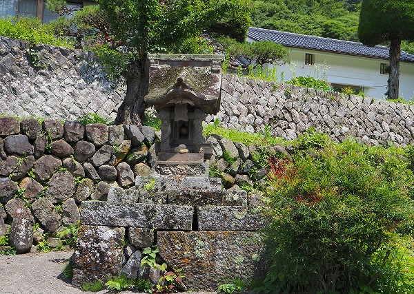
これもまた見事な祠だ。
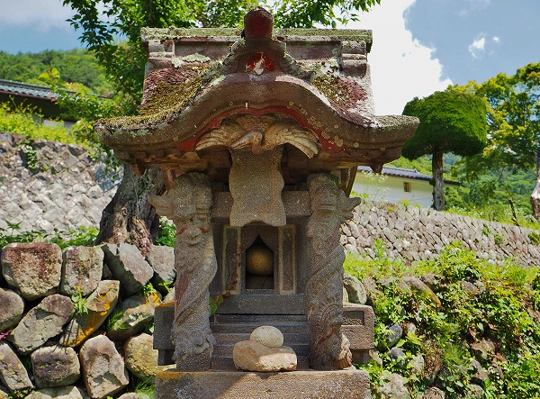
正面の柱には中国のお寺のように
龍が巻き付いていて
唐破風には鶴が彫られている。
凄いゴージャスだ。
しかも赤白に彩色された形跡が…
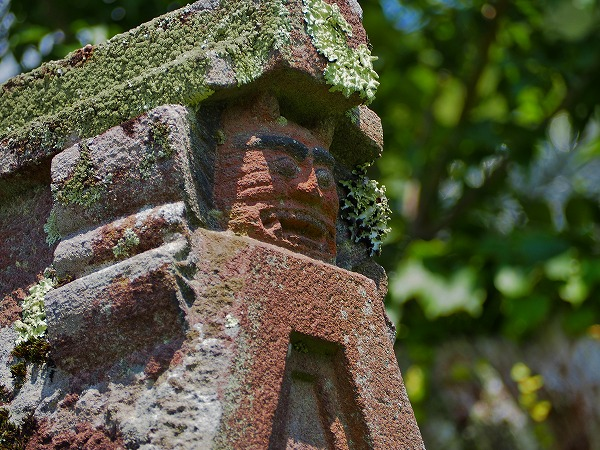
ギョギョギョ！
お顔も赤く塗られているでギョざいます！
見れば角が付いているような。
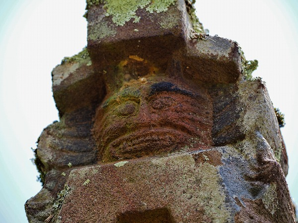
吽形。
下津金の顔に似てませんか。歯の辺り。
多分この祠も高遠石工が手掛けたものなのだろうが、
色を塗った事によって面白い感じになっちゃいましたね。
私は嫌いじゃないです。
どっちかというと好きな方です。はい。
同じく
比志集落にあった道祖神。
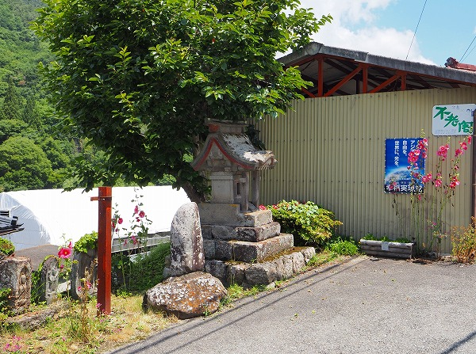
幾つかの石仏と一緒に祀られていた。
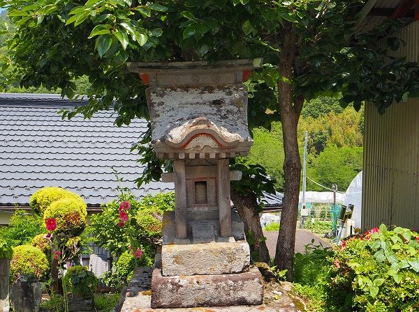
これも唐破風に羽を広げた鶴があしらわれていて良い感じ。
しかし脇にまわると…
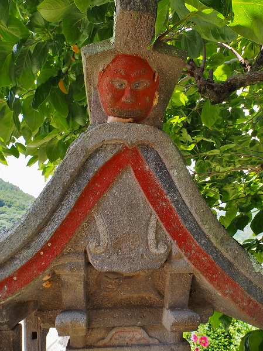
顔面インパクトが強い！
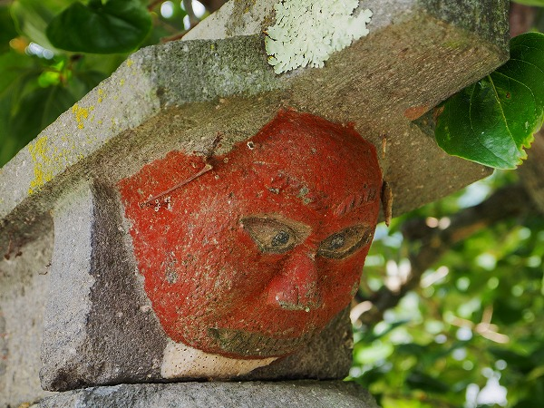
しかも斜め下を向いている。
賛同してくれなくて結構だし、批判も受け付けないが、見た瞬間
北大路欣也！って思っちゃいました。何か眼の開き具合が。

軒下に彫られた猫？虎？犬？
左側面。
顔面もだが、破風板も赤と黒で塗られていて強い印象を受ける。
顔は角がない。鬼ではなくて猿田彦、ということなのだろうか？
それにしても何故この比志の道祖神だけがこんなにばっちり赤塗りしちゃってるんだろうか？
猿田彦でも鬼でも基本赤い顔だから塗るとすれば赤一択でしょうよ。あ、鬼なら靑という選択肢もあるか。
ただそれ以前に
塗る塗らないの選択の時点で「塗る」を選んでしまった原動力は一体何だったんだろう？
村で疱瘡が流行ったとか（赤は疱瘡除けの色でもある）、そういう特殊な事情が道祖神の顔を赤く塗る行為に走らせたのだろうか。
こちらにも虎だか猫だか犬だか判らない生き物が。
カワイイからイイ♡ …と許してもらえると思うなよ。石工。
高遠石工の祠を真似て地元の石工が造った、という所でしょうか。
比志集落3つ目の道祖神は
比志神社にいる。
塩川沿いにある静かな神社だ。
その本殿の左手に道祖神の祠があるのだが…
ここの祠も唐破風に鶴、そして赤く塗られている。
という事は…
ぎゃん！
しばし絶句。
真っ赤な御顔が屋根を飛び出して迫って来た。
しかも屋根のサイズに比べて
デカすぎるだろ！
最早、道祖神という存在を越えて
この赤い御顔が祭神なんじゃないか、と思えるほどのインパクト。
もう、鬼か猿田彦か、とか顔の位置がどう、とかコレ見てたらどうでもよくなっちゃいました。
山梨の道祖神の最終兵器でしょ。コレは。

兎だろう、な。
これも色塗らなきゃこんなに面白い感じにならなかったのに…

逆サイド。
目と口を塗らないから余計インパクトが強くなっちゃったんですかね。
それにしても
凄いもの見せてもらいました。ありがとうございます！
別日に
韮崎市で見かけた道祖神。

ここも柱だけがうっすら赤く塗られていた。

ここのお顔は棟の先端を箱型に彫り込んでその中に彫ってあった。
こうすることで多少なりとも顔が劣化したり苔が乗ったりするのを防ぐことが出来るのだ。
逆サイド。
両方とも
無念そうな顔をしていらっしゃる。
あの道祖神を見た後だったので
「赤く塗ったらもう少しハッピーな顔になれるのにな～」と、どうしても思ってしまうのであった。
…イカン、病気だ！
おまけ
北杜市高根町の
諏訪神社にあった
庚申像。
どっちも面白すぎて一見何の像か判らなかったよ！
左の庚申様なんてタコみたいに手がぐにゃぐにゃしちゃってるし、右の庚申様の足元の三猿なんて人間の赤ちゃんみたいだし…。
堪らん！
やっぱり高遠石工の精緻な石仏より
あたしゃこっちの方が好きだなー。